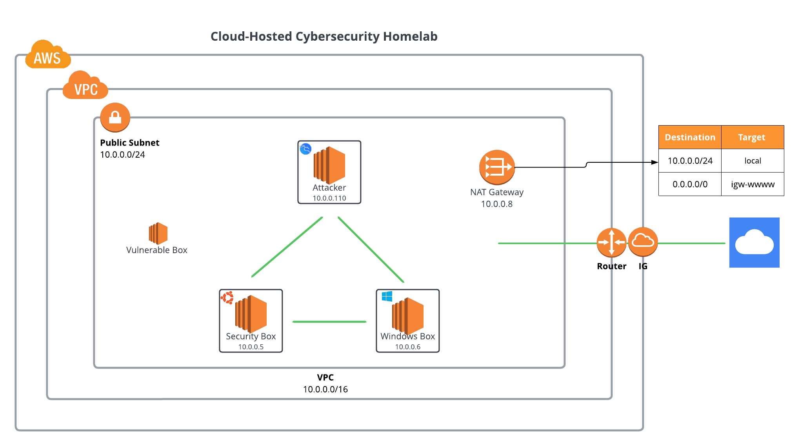

Infrastructure Setup
I created a cloud-based cybersecurity lab using AWS, designed for hands-on red and blue team activities. Below is a breakdown of the setup:
- Provisioned three EC2 virtual machines within a Virtual Private Cloud (VPC).
- Configured a public subnet and an internet gateway for internet access.
- Deployed the following virtual machines:
- Security Tools Box: Ubuntu Desktop for analysis tools.
- Kali Linux: Attacker machine for penetration testing.
- Windows 10 Workstation: Simulated user environment.
Manual Setup using AWS Console
- Created a VPC named
Cloud Cybersecurity Home Lab. - Configured security groups to control traffic flow.
- Created an SSH key pair named
cyber security. - Launched the following EC2 instances:
- Kali Linux: Deployed using an official AMI from AWS Marketplace.
- Security Tools Box: Deployed using a NetSpectrum Ubuntu Desktop AMI.
- Windows 10 Workstation: Deployed using a Windows Server 2022 AMI.
Software Installation and Configuration
- Security Tools Box:
- Installed Splunk Enterprise (free trial) for telemetry data analysis.
- Configured Splunk to receive data on port 9997.
- Installed Tenable Nessus (community edition) for vulnerability scanning.
- Windows 10 Workstation:
- Installed Splunk Universal Forwarder to send data to the Security Tools Box.
- Configured Windows event log forwarding to the Splunk
win-securityindex.
- Kali Linux:
- Enabled RDP access for remote connections.
Automation (Optional)
Although the infrastructure was set up manually using the AWS Console, future enhancements could include automating deployment with Terraform. This would allow for faster provisioning and decommissioning, saving AWS costs.
Purpose
This cloud-based cybersecurity lab provides a safe and flexible environment for practicing security skills:
- Simulate attacks from the Kali Linux machine.
- Analyze logs and events using Splunk Enterprise.
- Conduct vulnerability assessments using Tenable Nessus.
This lab setup supports hands-on learning and experimentation with real-world cybersecurity tools and scenarios.
I installed Windows on my MacBook to complete this entire project within a Windows environment, further enhancing my technical capabilities across platforms.